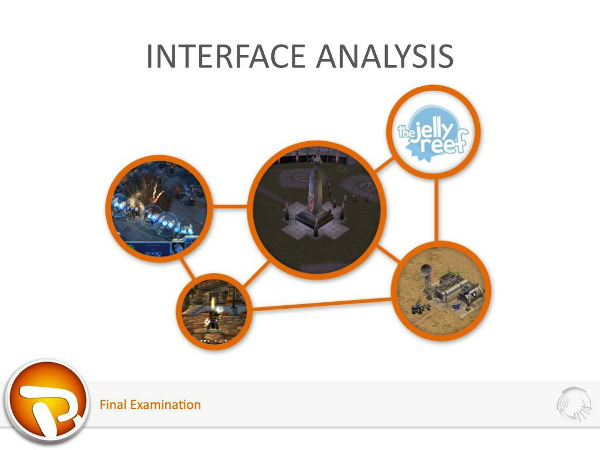

📊 Interface Analysis
- This is about studying how things are laid out and work on a website or an app.
- We look at elements like buttons, menus, and text boxes.
- We analyze their placement and functionality.
- It’s like taking apart a toy to understand how it’s made and works, but for websites and apps.

🎨 Interface Design
- We decide how the interface will look and function based on our analysis.
- We choose colors, fonts, and shapes to ensure a visually appealing and user-friendly design.
- It's like sketching a blueprint for a house before building it, but for a website or app.

💻 Interface Construction
- This stage involves assembling all the elements based on the design.
- It ensures that buttons, menus, and other components are in place and functioning correctly.
- Think of it as constructing a building using the materials and plans from the design phase.

🔗 Interface Implementation
- Here, we develop the interface by writing the actual code.
- Developers ensure that everything functions correctly, like buttons being clickable and menus opening properly.
- It’s like bringing a blueprint to life through coding.

✅ Interface Validation
- After building the interface, we test it to ensure everything works smoothly.
- We check if buttons perform their intended actions, if the design looks good, and if users find it easy to navigate.
- It’s similar to testing a new game to ensure it's fun and runs smoothly.